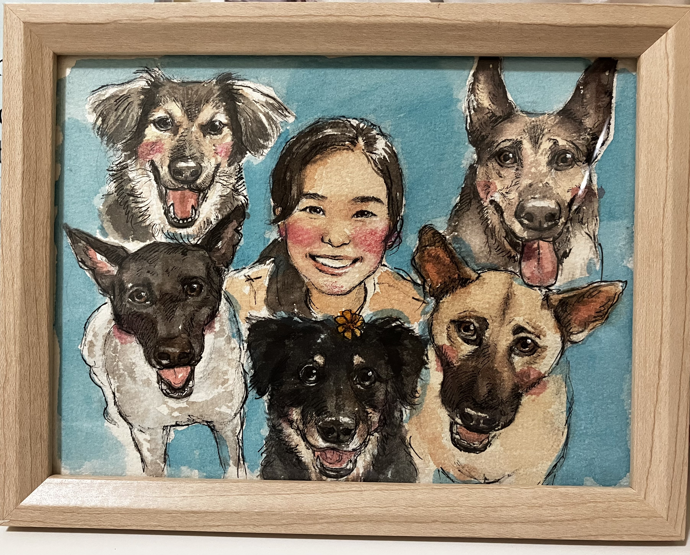

More about my Research (my papers on ORCID), my curriculum vitae , to know why do I do astronomy or to know me as a dog-person/amateur singer/blog writer .
Hi, I'm Minh Ngoc Le (Ngoc)*!
I am a Marie Curie Ph.D. fellow as part of the EDUCADO Doctoral Network , at Instituto de Astrofísica de Canarias.
I enjoy studying low surface brightness objects through deep imaging surveys (Euclid, LIGHTS, Vera Rubin LSST) to gain insights into galaxy formation and evolution.
I enjoy studying low surface brightness objects through deep imaging surveys (Euclid, LIGHTS, Vera Rubin LSST) to gain insights into galaxy formation and evolution.
More about my Research (my papers on ORCID), my curriculum vitae , to know why do I do astronomy or to know me as a dog-person/amateur singer/blog writer .
*Find how to pronounce "Ngoc" here 🔊 .